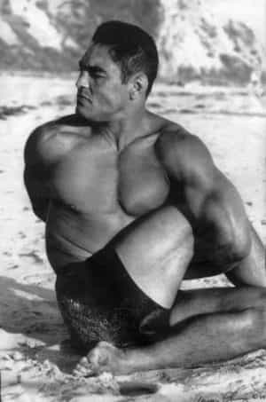
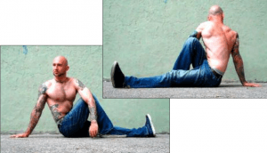
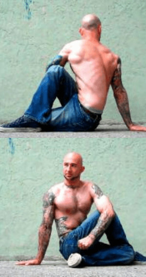
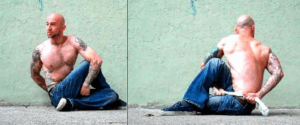
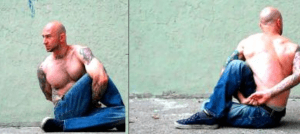

< < < Back
Why You Should Be Doing The Twist Stretch – Return Of Kings
As I have repeatedly shown in my articles, I am a fan of all aspects of fitness—not just strength and developing muscular mass, but also cardiovascular endurance and flexibility as well. You likely knew this already.
You are also likely aware that I have done several articles on stretching, most recently the “relax into stretch” technique that I state can be used predominantly for lower body stretching such as the splits, which are and will likely always be considered the benchmark of hip and leg flexibility.
But what about upper body flexibility? Most people don’t focus on that, and that is just as important to train as lower body flexibility (namely for purposes of increased athletic performance, reduction of joint aches and pains, and, in some cases, increased strength). I have taught the readers some basic upper body stretches in the past, such as the chest stretch and the door frame stretch. But in my opinion, if you’re going to do any one stretch for upper body flexibility, that would have to be the seated twist stretch.
How It Works
This stretch involves crossing your legs in a manner that will be discussed below, and twisting the torso while simultaneously locking your arm onto your bent knees. This stretch will hit most of your most prominent upper body muscles—the latissimus dorsi, the triceps, the deltoids, the obliques, the neck, and the pectorals.
In addition to those visible muscles, the twist stretch will work the deep spinal muscles, and even the muscles of the buttocks (the gluteus maximus, medius and minimus) as well.
Many athletes perform the twist stretch, particularly combat athletes such as wrestlers, judokas, and mixed martial artists that need great torso flexibility to escape from holds and pinfalls.
Sounds like something you ought to learn, doesn’t it? But how?

As I have happily admitted in the past, and will likely do so again, Paul Wade’s outstanding Convict Conditioning series has taught me this and many other exercises, and I cannot advocate Wade’s writing enough. More specifically, the Twist Stretch comes from Convict Conditioning 2. The first book deals with the core calisthenic series—push-ups, squats, and the like. I have already gone over these in detail. In contrast, the second book deals with static holds that develop strength and flexibility such as the L-Sit and today’s topic.
While the third book deals with explosive movements such as the back and front handsprings, that will be a topic for another time. Instead, let’s go into the steps of the Twist Stretch.
All of the pictures here are taken directly from the book.
The Exercises
The first twist stretch is the “Easy twist stretch.” Sit down on the floor with your feet extended. Take one foot, and put it “inside” the other leg, resting that foot next to the opposite knee, as shown.
Now, twist your body so the opposite shoulder turns towards the raised kneed (ie: if the left knee is raised, turn the right shoulder, and vice versa). Keep the foot flat on the ground and the knee stationary-just twist the torso. Allow your neck to turn as it naturally wants to turn.

Then, “lock” your torso by placing your elbow against the opposite side of the knee, while holding your body up with the other hand.
You should immediately begin to feel a stretch all around your torso.
Hold the stretch for 10 seconds, for each side. When this is comfortable for you, move on.
Step 2 is the simple twist stretch, which requires a little bit more flexibility. Place one foot over the other leg as shown above. Then, take the foot that is not flat on the ground, bend the leg back and touch the heel of that foot to the opposing buttock (ie: the right heel touches the left buttock).

This foot position will be used for all twist stretches from henceforth.
Now, as before, rotate your torso towards the opposite knee (right shoulder to left knee, and vice versa), locking yourself by placing your elbow on the opposite side of the knee, and again supporting your body with the other hand. Hold for 10 seconds, and move on.
Stretch 3 is where things become more difficult. Assume the position from Stretch #2. But this time, you will have to rotate the torso with much more force, as the goal of this stretch is to extend your arm and touch the instep of the foot that is flat on the floor. Your arm won’t be able to stretch on its own (and I don’t advise you try), you will have to accomplish this with proper torso rotation.
Stretch 4 has the difficulty increase further: Get a hand towel or some other object that is about a foot long. Assume the stretching position, and rotate the torso while holding said towel. Remove the supporting hand from the floor, and flick the towel through the “hole” made by your raised leg (obviously your hand is not extending down to your instep here). Wrapping the “support” hand around your back, grab the other end of the towel. This begins the stretch.

Each time you stretch, you will assume this position holding the towel in two hands. You will work your hands up and down the towel, slowly bringing your hands together by gripping greater portions of the towel. Eventually, you will be able to clasp fingers, and that is the final level of the twist stretch.

This process will be slow and arduous—“Coach Wade” himself admits that it took him the better part of a year to accomplish this by moving his fingers together inch by inch. I myself am not quite at the final level yet-a rough measurement shows that I have about 4 more inches of towel to go before my fingers touch, but I have certainly noticed increased mobility and flexibility already.
The towel stretch can be made easier by remembering to “worm” both hands up the towel, not just one. Actively use both to secure deeper stretches, and you will notice progress.
Doing even the easiest variations of this stretch will make you notice an immediate healing of the spine: your back will deliciously crack and you’ll feel warm and limber afterwards. And with practicing the more advanced variants, you will make yourself more limber for whatever physical activity you engage in, ranging from dancing to getting out of submission holds.
Or you could be one of millions of Americans with bad backs and hips. The choice is yours.
Read More: Why It’s Necessary To Relax Into A Stretch